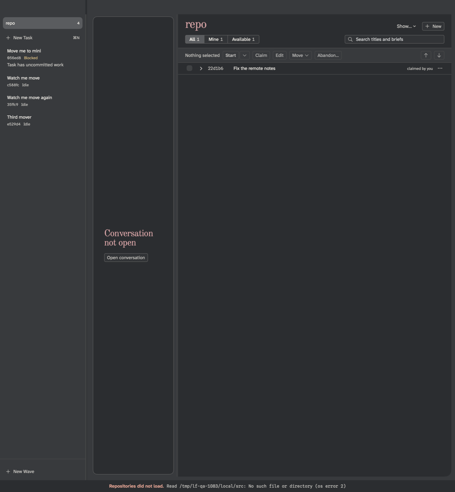
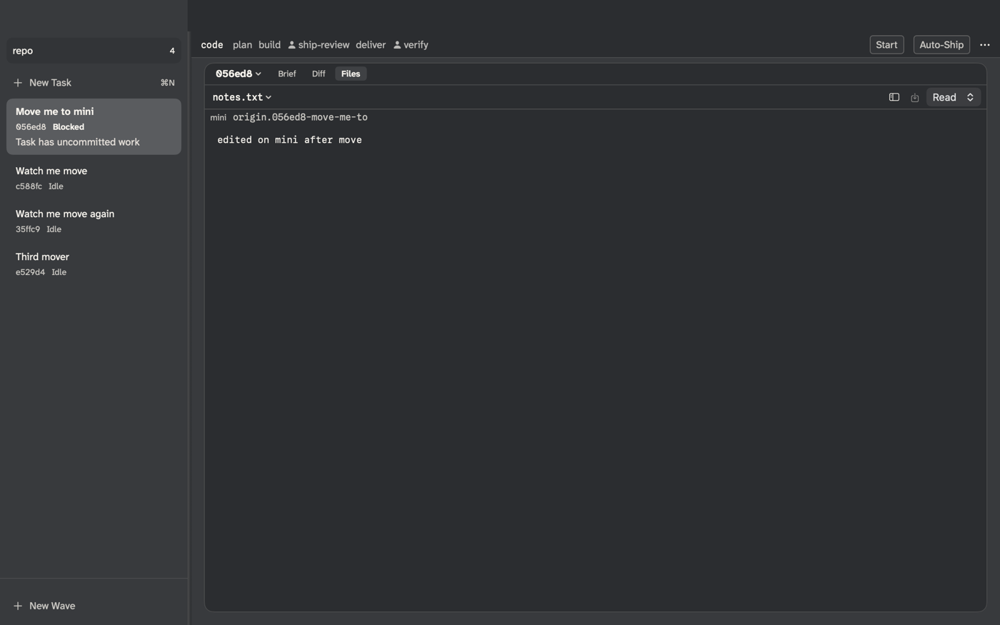
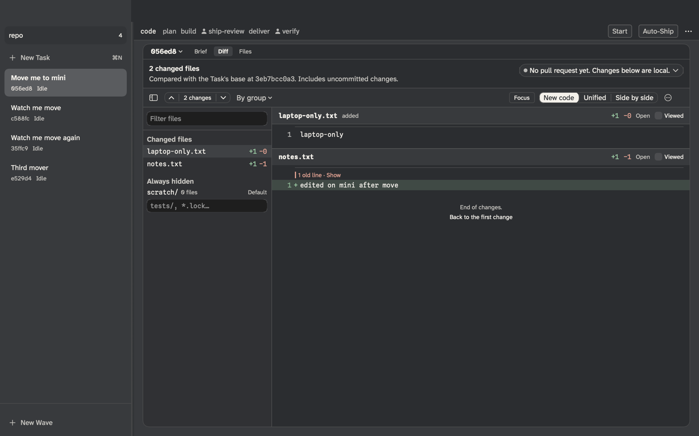
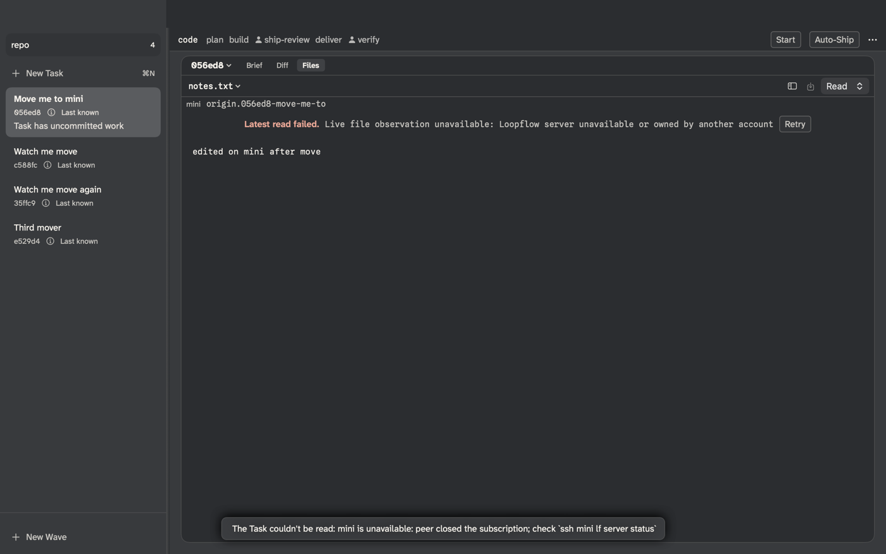
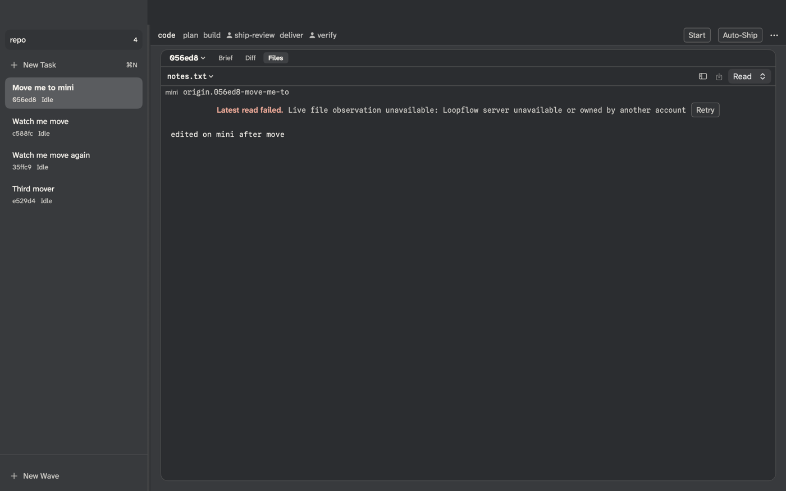

Two private Machines on this Mac: laptop (private home, branch lf server run) and mini (separate home, reached through a stand-in ssh, its own branch server). Everything set up with the CLI: lf machine add mini, lf task create, lf task move --machine mini, a stale laptop checkout edited after the move. Then the branch CLI, the server socket and an isolated Dev bundle of Desktop, all on the laptop side. Recipe: .lf/qa/remote-task-workspace.md.
| Scenario | What I did | What I saw |
|---|---|---|
| Unstarted Task on mini | task.files, task.shell.start, task.files.watch over the laptop socket; lf task files | All three answer not_found {reason: not_started}. The CLI printed the message twice ("Caused by: …" repeating it) — fixed. |
| Started Task, CLI reads | lf task files / file / changes / diff on the laptop | Before: "Task … is not started" for a Task with a checkout on mini — the CLI read only this Machine. Fixed: they now go through the same routed Read as the server; they list mini's tree, read "unchanged on mini", and show mini's hunk. |
| CLI save | echo … | lf task save --revision <rev> on the laptop, then again with the old revision | Fixed the same way (it also said "not started"). Now: "Saved. Previous file retained in recovery." on mini; the stale revision answers "File changed on disk. Draft retained", nothing written; the laptop's copy untouched. |
| Shell | lf desktop shell <task> --id qa-shell --create -- /bin/sh -c 'hostname; pwd; echo $HOME' | PWD=/private/tmp/lf-qa-1083/remote/src/origin.22d1b6-fix-the-remote, HOME=/tmp/lf-qa-1083/remote. |
Session, lf open --task | Prepared primary on mini; lf open --task <id> --here in a PTY; typed hello | "mini received hello". A moved Task with no Session also started on mini, in mini's checkout (OSC 7 names it), once mini had default_agent. |
| Machine-only Session | lf open --machine mini --session <sid> --here and lf --machine mini open … | Both: "provider on mini in …/plain.repo", input answered. |
| Mini unreachable | touch bin/ssh.offline; socket read and CLI | Before: "mini is unavailable: machine "mini": unreachable: run `ssh -o ControlPath=none -- 'mini'` …; check `ssh mini lf server status`" — two different checks, the second wrong for an SSH failure; a timeout said "check `ssh mini lf server status`" twice. Fixed: a message that already names an ssh check is kept as is, with the Machine data attached. Data still {resource: machine, machine_label: mini}. |
| Move with views open | task.get + task.files.watch subscribed on the laptop, lf task move | task.get: laptop checkout → null workspace → mini's checkout, same id. |
The files watch ended with not_started mid-move (ownership advanced before arrival made mini's checkout). Desktop reopens it from the task.get reading (relocate); the phone resubscribes every 5 s. As documented; noted below. | ||
| Desktop Files / Diff | Isolated Dev bundle on the laptop home, QA hook snapshots, desktop do details page=files|diff | Files: "mini origin.056ed8-move-me-to", "edited on mini after move" (the laptop's copy said "STALE bytes on laptop"). Diff: mini's two changes. |
| Desktop board row | Sidebar for the moved Task | Before: "Blocked · Task has uncommitted work" — read from the stale laptop checkout. Fixed: the row applies the ownership rule once, before local progress, provider and workspace; now "Idle". |
| Outage in Desktop | Restarted both servers with Files open | Toast and Files line name mini with Retry. |
Before the row fix: the moved Task "Blocked" by its stale laptop copy.

Files on mini's checkout.

Diff from mini.

During my server restart: outage names mini.

After the fix the row reads Idle; the Files watch line stayed failed after the local server came back.

OpsError::Refused is transparent; engine::Error::named still finds the typed refusal through it (wire answers unchanged: not_found + reason).lf task files|file|changes|diff|save route to the owning Machine (Read/Write); --difftool and --recoveries stay local.unavailable_on keeps a message that already names its ssh check.task.worktree when another Machine owns the Task; task_reference lost its duplicate filter.cargo test -p loopflow --test integration -- machine_commands::task_file_commands_read_and_save_on_the_owning_machine ok (new) cargo test -p loopflow --test integration -- machine_commands::server_routed_task_workspace open_remote_workspace \ machine_commands::an_unreachable_destination_names_the_ssh_check_not_its_server machine_commands::an_lf_that_dies_before_answering_says_so_and_what_it_printed 4 ok, 54.7 s cargo test -p loopflow --lib task_reference_names_only_this_machines_checkout ok (extended) cargo test -p loopflow --test integration -- task_diff_tests:: dto_fixtures::task_files_share 3 ok cargo test -p loopflow --test global_commands -- non_agent_context_previews_reject_before_reading_stdin task_planning_explain_save_validates_draft_without_changing_files_or_storage 2 ok cargo clippy --all-targets -- -D warnings clean Desktop/iOS RemoteTaskWorkspaceTests: not rerun (no Swift change); gate runs them.
lf open --task -a claude over the route: on an owner with no default_agent, mini refuses "No agent selected" though the session.resume it received carries "agent":"claude"; the same command on mini itself works. The error also repeats itself ("load error: X: X; inspect the affected work before retrying").lf open --task <id> is what works there.not_started when the destination's checkout arrives after the ownership change. Clients recover (Desktop via task.get, phone via its 5 s loop); a server that kept following would let the phone drop its loop.lf task changes right after an edit said "no changes".RemoteTaskWorkspaceTests are gate's.lf open, lf desktop shell) were exercised above.